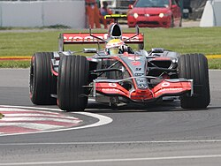
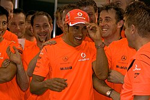
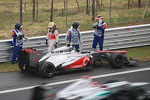
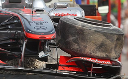
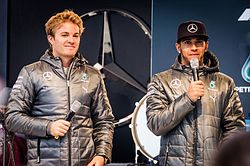
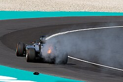
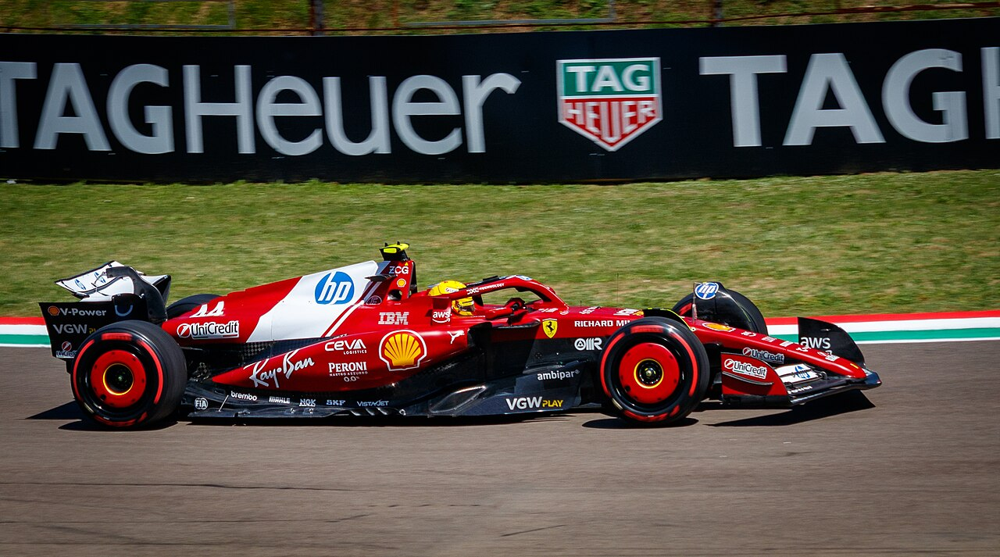

Hamilton's success in the GP2 championship coincided with a vacancy at McLaren-Mercedes following the departure of Juan Pablo Montoya to NASCAR and Kimi Räikkönen to Ferrari.[53][54] Hamilton was given nearly 5,000 miles (8,000 km) of testing in the McLaren MP4-21 to acclimatise himself to Formula One, alongside Pedro de la Rosa and Gary Paffett.[55][56] Ultimately, Hamilton was confirmed as the team's second driver;[57] the announcement was not made public for nearly two months, reportedly to avoid being overlooked by Michael Schumacher's retirement announcement.[58]
Hamilton's maiden season in Formula One saw him partner two-time defending World Drivers' Champion Fernando Alonso at McLaren.[59] At the season-opening Australian Grand Prix, Hamilton became the first—and, as of 2026, only—black driver to race in the series.[60][61][62] After finishing third on debut,[63] Hamilton went on to set several records,[64] including the most consecutive podium finishes from debut (9), the most wins in a debut season (4, shared with Jacques Villeneuve), and the then-most points in a debut season (109).[65] Acquiring the championship lead as early as in the fourth round of the season, Hamilton became the youngest driver to lead the World Drivers' Championship. After a series of misfortunes in the latter half of the season, including strategic missteps by McLaren in the closing rounds and a retirement at the Chinese Grand Prix, Hamilton's 12-point advantage in the standings evanesced.[66][67] He finished runner-up in the championship to Räikkönen by one point, classified ahead of teammate Alonso whilst finishing level on points.[note 2] Throughout the season, Hamilton and Alonso were involved in several incidents, which resulted in inter-team tensions, culminating in Alonso and McLaren terminating their contract by mutual consent.[69][70] Hamilton signed a £50 million contract to stay with the team until the end of 2012.[71].A group of people dressed in orange celebrate, with Hamilton in the middle wearing a baseball cap.Hamilton (centre) celebrates his maiden World Drivers' Championship with McLaren at the 2008 Brazilian Grand Prix.Partnering Heikki Kovalainen for 2008, Hamilton's winning form continued as he amassed five race victories and 10 podium finishes. Ferrari drivers, along with BMW's Robert Kubica, emerged as his closest rivals, as they engaged in a close battle for the title with Hamilton during the first half of the season. At the rain-affected British Grand Prix, he won by over a minute from second-placed Nick Heidfeld, which was widely acclaimed as one of the greatest wet-weather performances in Formula One history.[72] As the season progressed towards the closing rounds, the championship became a clear two-way fight between Hamilton and Ferrari's Felipe Massa. Hamilton won his maiden title at the season-ending Brazilian Grand Prix, overtaking Timo Glock for fifth-place at the final corners of the last lap to become the then-youngest World Drivers' Champion, and deny race-winner Massa the title by one point.[73][74] Hamilton also became the first British driver to win the World Drivers' Championship since Damon Hill in 1996.[75]


During his veering final years with McLaren—a period largely dominated by Red Bull—Hamilton continued to score podium finishes and race victories, and challenged for titles. Major technical regulation changes in 2009 led to a challenging start for McLaren.[76] Often qualifying outside of the top ten, and struggling to finish consistently on points, Hamilton's chances of defending his title became unfeasible. Major upgrades at the German Grand Prix saw a dramatic improvement in performance of the MP4-24 car. From that point onward, Hamilton advanced from eleventh to fifth in the standings and outscored the rest of the field, securing two race victories and three additional podium finishes across the remaining nine rounds.[77]In 2010, Hamilton was partnered by reigning World Drivers' Champion Jenson Button.[78] Whilst McLaren struggled to match the outright pace of Red Bull and Ferrari,[79] Hamilton engaged in a four-way title battle with Alonso, Sebastian Vettel and Mark Webber throughout the season. At the Canadian Grand Prix, he secured McLaren's only pole position of the season, and took the championship lead after winning the race.[80] Hamilton's latter half of the season unravelled with a number of misfortunes, including race-ending collisions and mechanical failures, culminated in him losing vital points to his rivals, and ultimately, the championship lead.[81] He entered the final round of the season with an outside chance of winning the title, but finished fourth in the standings as Vettel won his maiden title.[82]2011 was a challenging year for Hamilton, marking the first season he had been out-scored by a teammate, as Button finished runner-up to Vettel. Setbacks in his private life, as well as on-track collisions culminating in multiple run-ins with the stewards, contributed to his inconsistent performances throughout the season.[83] Hamilton finished fifth in the standings with three race wins; he secured the only non-Red Bull pole position of the season at the Korean Grand Prix, and vowed he would return to form.[84]In 2012, McLaren emerged as contenders for the title, with Hamilton remaining in title contention during the first half of the season.[85] Akin to the 2010 season, he endured a challenging latter half of the season, with inconsistent results and a series of mechanical failures. Across those ten races, Hamilton encountered five retirements, three whilst leading. Ultimately, Hamilton finished fourth in the standings, achieving four race wins and a season-highest seven pole positions.[86][87] Motorsport.com analysis found that Hamilton had lost an estimated 110 points due to race retirements and other misfortunes.[88] Prior to the end of the year, having denied multiple renegotiations with McLaren, Hamilton announced—to widespread surprise—that he would be joining Mercedes for the 2013 season.[89][90] Hamilton expressed his gratitude, stating he was "forever grateful" for the opportunities and support he had received throughout his career, ending a 15-year association with McLaren.[91]


Upon signing with Mercedes in 2013, with a deal reportedly worth more than £60 million to replace the retiring Schumacher, Hamilton was reunited with his childhood karting teammate, Nico Rosberg. The move was met with surprise by pundits and the public, with some describing the move to Mercedes—a team with no recent history of success—as a gamble.[92][93] In his first season with the Brackley-based team—amidst Mercedes W04's tyre management struggles—Hamilton finished fourth in the standings,[94] securing five podium finishes and pole positions, with only one converted into a race victory at the Hungarian Grand Prix.[89][95] Whilst Pirelli's switch in tyre construction contributed to his victory in Hungary, Hamilton and Mercedes endured a difficult latter half of the season, as he only managed to achieve one podium finish for the rest of the year.[96]Changes to engine regulations for the 2014 season, which mandated the use of turbo-hybrid engines, contributed to the start of a highly successful era for Hamilton. Mercedes won 16 of the 19 races held that season; Hamilton secured a career-best 11 victories as he prevailed in a season-long duel for the title against teammate Rosberg. After securing a streak of wins and acquiring the championship lead, Hamilton endured a number of misfortunes mid-season, including mechanical failures and a collision with Rosberg which culminated in a retirement from the Belgian Grand Prix, saw him trailing Rosberg by 29 points in the standings.[97] Following a run of five consecutive race victories towards the end of the season, Hamilton clinched his second World Drivers' Championship at the final round in Abu Dhabi, and declared it was "the greatest day of [his] life" over team radio.[89]Opting to continue racing with his old karting number 44, Hamilton fended off Rosberg's challenge for the title for a second year running in 2015, winning 10 races from a then-joint record 17 podium finishes, scoring 11 pole positions in the first 12 races, and leading the championship throughout the season, he achieved his first back-to-back championships.[98] His rivalry with Rosberg intensified, climaxing in a heated battle at the United States Grand Prix, where Hamilton clinched the title with three races to spare.[89] Hamilton extended his contract with Mercedes for three additional years in a deal reportedly worth more than £100 million;[99][100] the deal allowed Hamilton to retain his own image rights and keep his championship-winning cars and trophies.[99]After another season-long duel for the title in 2016, Hamilton finished runner-up in the championship to Rosberg by five points. He endured a challenging start to the season, as a succession of poor race-starts and mechanical failures culminated in him being marginally behind Rosberg in the standings.[101][102] Mercedes's policy of letting the pair fight freely led to several acrimonious exchanges on-track,[103] culminating in collisions at the Spanish and Austrian Grands Prix. Hamilton won six of seven races mid-season, including the Hungarian Grand Prix, where he overtook his teammate to the championship lead for the first time of the season. After a crucial engine blowout in Malaysia, Hamilton secured a hat-trick of wins—including his 50th race victory in United States, and 100th podium finish in Japan—to enter the season-ending Abu Dhabi Grand Prix, 12 points adrift of Rosberg.[101] In Abu Dhabi, Hamilton defied team orders—deliberately slowing Rosberg into the chasing pack at the end of the race, in an unsuccessful bid to encourage other drivers to overtake his teammate.[104] Rosberg took the title before announcing his shock retirement from the sport, immediately after beating his rival.[89][105] Finishing runner-up in the championship, Hamilton broke the record for most wins in a season without becoming the champion, securing a season-highest 10 race victories, in addition to the record for most career points of all-time.[106]


following the announcement of his departure from Mercedes, Ferrari announced they had reached a multi-year agreement with Hamilton to join the team in 2025, on a contract reported to be worth £41 million per year,[170] replacing Carlos Sainz Jr. as teammate to Charles Leclerc.[171] Hamilton stated it had been a "childhood dream" to drive for Ferrari.[172] In parallel to his move from McLaren to Mercedes in 2013, it was noted as one of the most unexpected driver transfers in Formula One history,[173][174] and marked the first time in his career where he did not drive for a Mercedes-powered team.[175] His difficulties with the ground-effect generation of cars have persisted throughout his debut season with the team.[176] Much like in 2024, his "painful" campaign has been marked by fluctuating results, including his maiden sprint victory at the Chinese Grand Prix before being disqualified from the main race for a technical infringement,[177][178] and enduring consecutive Q1 exits in the final three races for the first time of his career.[179][180][note 4] In addition to Ferrari's inconsistent performances throughout the season,[182] Hamilton admitted to feeling less confident with the car compared to teammate Leclerc, describing it feeling as "alien" compared to his prolonged experiences with Mercedes.[183][176] Hamilton ended the season sixth in the championship, 86 points behind teammate Leclerc, marking the first season of his career in which he did not secure at least one podium finish.[184]Hamilton is reported to be contributing to the shaping of the team's competitiveness ahead of the 2026 regulation changes. He has held a series of meetings with the team principal Frédéric Vasseur, head of car development Loïc Serra, chairman John Elkann, and CEO Benedetto Vigna, focusing on structural changes and car development, and has presented detailed documents outlining his suggestions for improvement.[185][186]
